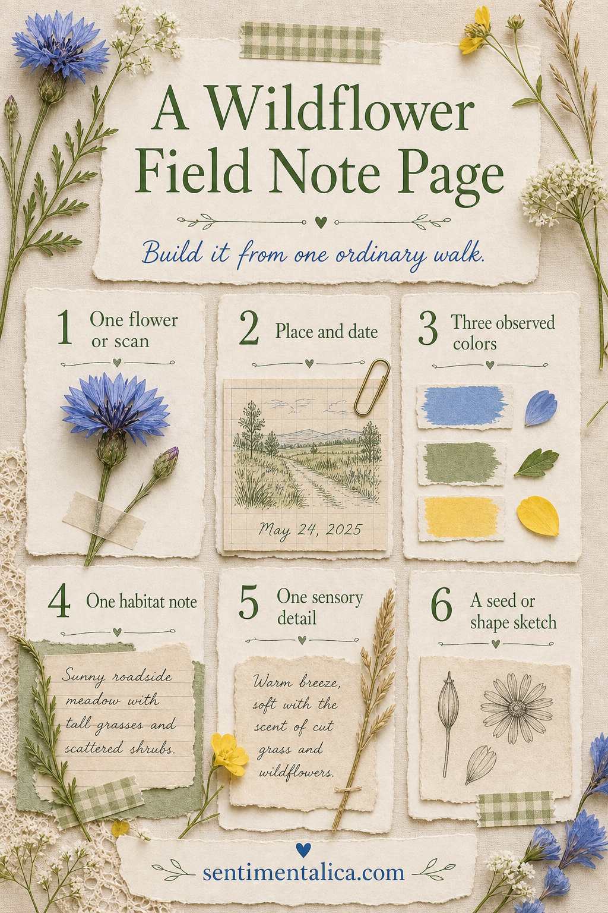
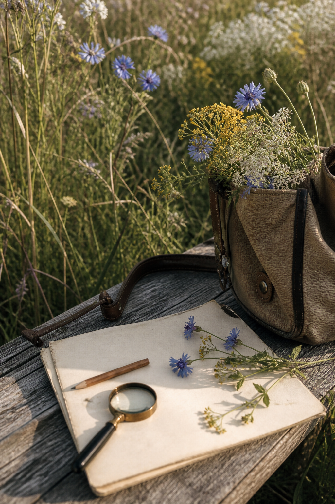

A wildflower journal does not require expert identification or a rare botanical discovery. One ordinary walk gives you enough material: a flower shape, three colors, a place and date, one habitat observation, and one detail your camera could not record.

Collect with restraint
Photograph the plant where it grows before taking anything. In protected areas—or whenever you are unsure—leave it in place and use the photograph or a quick contour sketch. If collecting is permitted, take only a small common specimen and keep it loose in paper rather than plastic.
Write what you actually observe
Record the place and date, then describe the habitat in plain language: sunny roadside, damp woodland edge, dry stone wall. You do not need a scientific name to notice leaf shape, stem texture, or how the flowers face the light. Add one sensory detail such as warm grass, buzzing insects, or wind moving through seed heads.

Limit the page to three colors
Choose three hues directly from the scene and paint or pencil small swatches. A narrow palette connects the photograph, specimen, and notes even when they were added at different times. Finish with a seed, petal, or silhouette sketch in one corner.
Leave one blank area for a later identification, weather note, or return visit. A field note feels alive when it can continue growing after the walk ends.
Visuals in this article were created with AI assistance and art-directed for Sentimentalica.
Explore more nature-led journaling in the Sentimentalica journal archive.